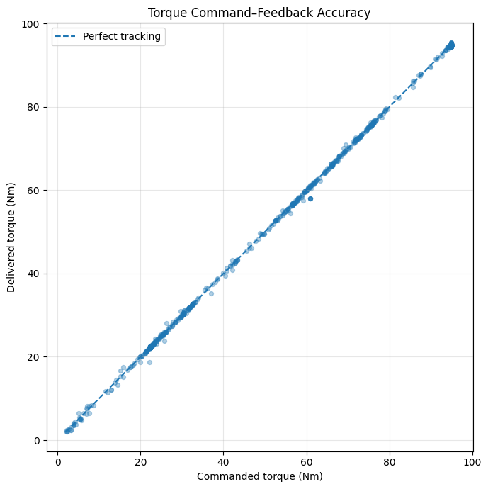
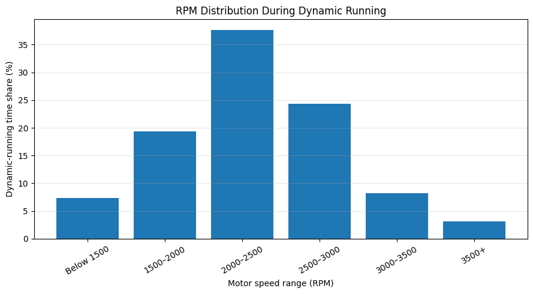
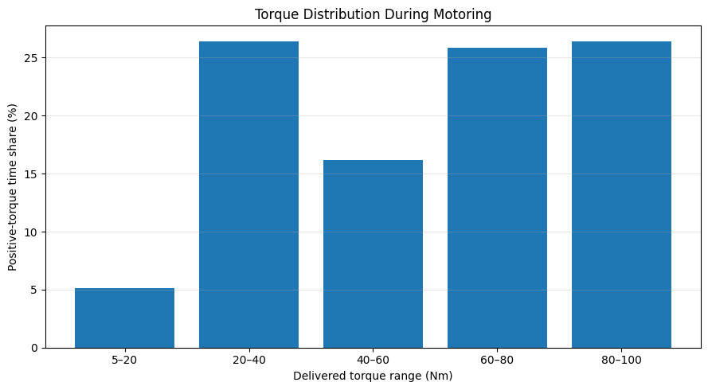

Torque response
The inverter delivered the requested motor torque with extremely small tracking error across the measured range.
BRUIN FORMULA RACING · CASE STUDY 02
Bruin Formula Racing — Inverter torque tracking and motor operating-region analysis
This study examines how accurately the inverter delivered requested motor torque and where the motor operated during the dynamic portion of the logged run. The analysis focuses on torque-command tracking, RPM usage, and the distribution of positive motor torque.
Measured results
Project question
The analysis was designed to answer two questions: how closely did delivered motor torque follow the inverter’s commanded value, and which RPM and torque regions were used most often during dynamic running?
Analysis workflow
Use:
time_sinv.rpminv.tq_cmdinv.tq_fbThe selected channels were converted to numeric values, sorted by elapsed time, and checked for duplicate timestamps.
The torque-feedback signal used the opposite sign convention from the commanded-torque signal. Its sign was corrected after confirming that the inverted signal produced the stronger command–feedback correlation.
The data was resampled to 10 Hz so repeated held CAN values would not receive excessive weighting in the analysis.
The dynamic-running section began at approximately 65 seconds, after the initial steady operating period. This produced a 93.6-second segment for the operating-distribution analysis.
Torque tracking was evaluated using correlation, mean absolute error, and root-mean-square error. RPM and delivered torque were then grouped into operating bands to calculate their time shares.

Result 01 · Torque tracking
The command–feedback relationship remained almost perfectly linear across the recorded torque range. Delivered torque followed commanded torque with a correlation of 0.9999, a mean absolute error of 0.17 Nm, and an RMSE of 0.32 Nm.
The points remain close to the perfect-tracking line from low torque through the approximately 95 Nm maximum-torque region.

Result 02 · RPM operating distribution
During the 93.6-second dynamic-running segment, 81.3% of recorded operation occurred between 1,500 and 3,000 RPM. The most common individual range was 2,000–2,500 RPM, accounting for 37.7% of the segment.
Only 11.3% of dynamic operation occurred above 3,000 RPM.

Result 03 · Torque operating distribution
Positive-torque operation showed two prominent behaviours: moderate demand in the 20–40 Nm range and strong acceleration above 60 Nm. In total, 52.2% of positive-torque operation occurred between 60 and 100 Nm.
The 80–100 Nm band accounted for 26.4% of positive-torque operation, showing repeated use of the approximately 95 Nm maximum-torque region.
What the results show
The inverter delivered the requested motor torque with extremely small tracking error across the measured range.
The motor spent most of the dynamic segment in the 2,000–3,000 RPM region rather than continuously operating near its recorded maximum speed.
The torque distribution suggests repeated switching between moderate demand and high-load acceleration, with relatively little operation in the 5–20 Nm range.
Summary
The inverter’s torque response was highly consistent: commanded and delivered torque remained almost perfectly aligned despite repeated transitions between moderate and maximum demand. During dynamic running, the motor operated primarily between 1,500 and 3,000 RPM, while more than half of positive-torque operation occurred above 60 Nm.